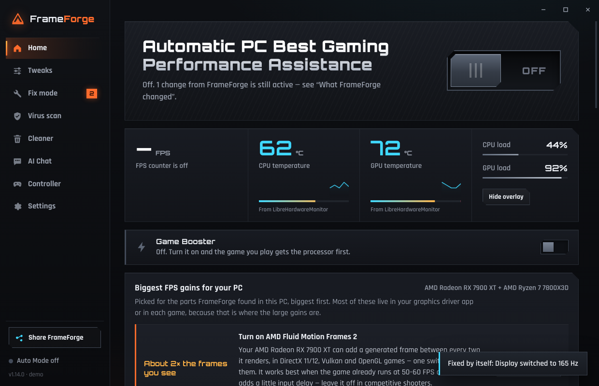

Pick a goal — Competitive, Best performance, Balanced or Best graphics —
and flip Auto Mode on. FrameForge scans your PC and applies only the tweaks that fit your
hardware. Every change is listed, and one button puts it all back.
Auto Mode tunes the whole PC for the goal you pick — and your own hardware can veto a boost that would hurt it, like battery-saving rules on a laptop.
New in 1.12
Extreme Performance
Everything FrameForge can do for zero-lag gaming — every boost on, background tasks silenced, games first.
Every tweak from Competitive, all on
Search indexing, telemetry and delivery optimization off
SysMain and memory compression off — no background disk hitches
Real-time priority for detected game processes
Competitive
Lowest input lag and the steadiest frame times, for shooters and ranked games.
Everything in Best performance
No pop-ups or Sticky Keys banners mid-match
Raw mouse aim, games on top CPU/GPU priority
Driver set to Reflex / Anti-Lag, V-Sync off
Best performance
Highest FPS and lowest input lag. Windows itself looks plainer.
Ultimate Performance power plan
Animations and shadows off
Chris Titus tweaks: telemetry and services off
Games get the fastest graphics card
Balanced
Most of the FPS gain, while Windows keeps looking and working like normal.
Ultimate Performance power plan
Game Mode on, background recording off
Windows visuals and services untouched
Low latency driver with quality upscaling
Best graphics
The sharpest, richest picture your PC can hold at a smooth framerate.
Auto HDR on for HDR screens
Full clock speeds so high settings stay smooth
Windows visuals kept on
High-quality textures and sharpening
Inside the app
More than a one-click optimizer.
Tuning, fixing, cleaning, scanning and measuring — in one window, with the exact before → after value for every change.
Auto Mode
Fifteen steps that run in the background: power plan, Game Mode, GPU preference, priorities and the tweaks your hardware can actually take. Stop any time.
Fix mode
Fixes problems by itself, without a click — refresh rate, reverted tweaks, a hot graphics card, missing tools, a full drive. It restarts the PC when a fix needs it, and finishes after.
Virus scan
Quick, Full and Custom scans with Microsoft Defender’s engine, a time estimate and live file count. Every detection gets a false-positive check, and nothing is touched until you choose.
Cleaner
Finds and deletes the junk files that slow a PC down — temp files, caches and leftovers — with a safe list you can review first.
FPS, 1% lows & temps
A real counter with 1% lows, real CPU and GPU temperatures, and an in-game overlay on Ctrl+Shift+F. It tells you when it is measuring a menu, not a match.
42 tweaks, explained
Reduce input lag, use all CPU cores, keep USB awake, Nagle off and more. Each switch shows its real Windows state — not what it hopes is set — and every one is undoable.
Controller test
Detects your pad, draws Xbox or PlayStation layouts, and shows live buttons, sticks, triggers and motion — so you know a dead input is the pad, not the game.
AI chat that knows your PC
Ask what changed and get the exact before → after values. Use Claude with your own key, or a free model that runs on your PC — pick one, press Install, FrameForge sets it up.
Undo everything
A Windows restore point before the first change, a log of every value, and Undo all changes to put the PC back. Chris Titus tweaks undo with his own tool, linked in Fix mode.
Also inside
FPS limiter (RTSS-backed)
Windows animations switch
Windows performance mode — lighter sensor polling
Driver checklist for AMD Software / NVIDIA app
Steam & Epic games pinned to the fastest GPU
Startup switches that really change Windows
BIOS steps for XMP / EXPO, with one-click restart
Screens
What it looks like.
No hidden tabs and no mystery switches — the app shows its work while it runs.

Home — pick a goal, then flip Auto Mode on.
How it works
Three minutes, then it stays out of the way.
01
It reads your PC
CPU, graphics card, drives, display and the Windows values that matter. Boosts that don’t fit the hardware are switched off with a reason.
02
You pick a goal
Auto Mode applies that goal’s boosts — power plan, Game Mode, GPU preference, priorities, tweaks. You can watch every step and stop it.
03
You play
Fix mode and the counters keep running quietly. Mid-game, Fix mode only does things you won’t notice; bigger fixes wait until you’re away.
Built to be undoable.
FrameForge makes a Windows restore point called “FrameForge - before optimizing” before it changes anything. Every tweak is logged with its exact before → after value.
Undo all changes restores the values it set
Chris Titus tweaks are undone with his tool’s own Undo button
Windows System Restore is there as the last line
Change log
Power planBalanced → Ultimate Performance
Display refresh60 Hz → 165 Hz
GPU power limit320 W → 288 W (90%)
Restore pointCreated
Install
Download, run, say yes.
The installer is a normal Windows setup. After that, updates arrive inside the app.
1
Download the setup file
Grab FrameForge-Setup-x.x.x.exe from the latest release.
2
Run it anyway
Windows shows “Windows protected your PC” because the app isn’t code-signed yet — click More info → Run anyway.
3
Say yes to the admin prompt
Power plans, GPU scheduling and restore points need it. Pick a goal, flip Auto Mode on.
Yes. The app, the tuning, Fix mode, the cleaner and the virus scan are free with no account. The AI chat is optional: Claude needs your own Anthropic API key (a few cents per conversation), or you can install a free local model that runs on your PC.
Will it work with my graphics card?
It’s built for AMD, NVIDIA and Intel systems. FrameForge reads your hardware first and switches off any boost that would hurt it — a laptop never gets the “no power saving” tweaks, an older card never gets GPU scheduling.
Can it break my PC?
Every change is a documented Windows setting with its before and after value, made after a restore point. Undo all changes puts things back, and Windows System Restore is there as well. The app is early beta, so it says so plainly.
Why does Windows warn about the installer?
The app isn’t code-signed yet, so SmartScreen shows “Windows protected your PC”. Click More info → Run anyway. Some antivirus engines also flag unsigned Electron apps — the installer only comes from this repository’s releases.
Does it run while I’m playing?
Yes, quietly. Mid-game, Fix mode only takes actions you won’t notice and holds bigger fixes until you’re away. If you want even less background load, turn on Windows performance mode in Settings — sensor polling drops from once a second to once every three seconds.
Which games does it know about?
Your Steam and Epic libraries. Every game it finds is set to run on your fastest graphics card, and the Competitive goal raises game CPU/GPU priority. Others can be tuned by hand from the Tweaks tab.
How do I update it?
Updates arrive inside the app after the first install. You can also grab the newest installer from the releases page and run it over the old version.
Stop guessing which Windows setting costs you frames.